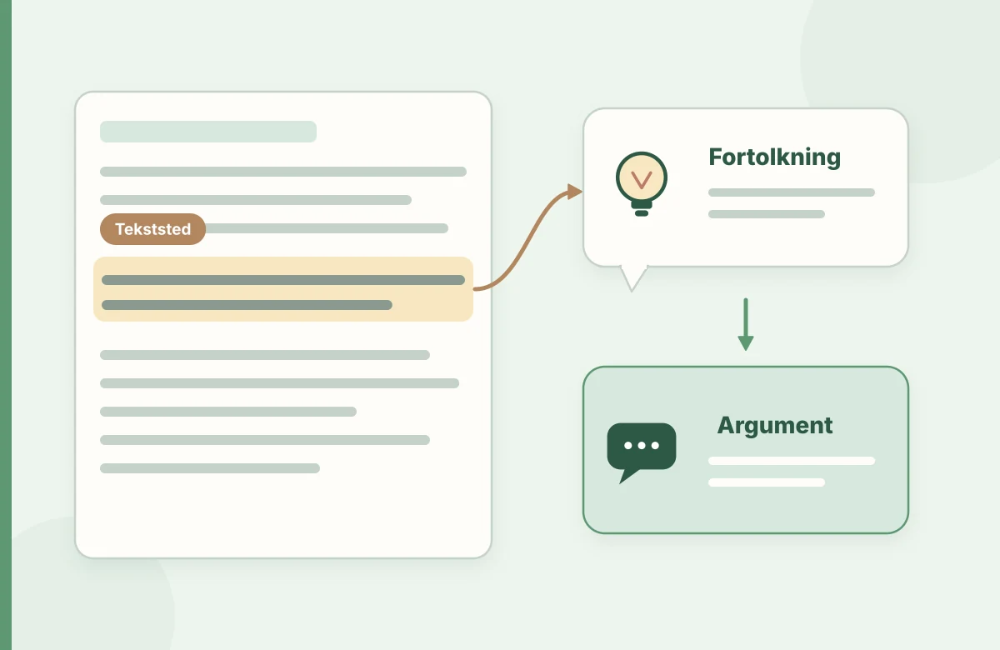

Faglig fordybelse
Brug kilderne til videre læsning, og orientér dig i studiekravene på din uddannelse.
Eksempler og cases er udarbejdet til øvelsesbrug.
At analysere en tekst er at lægge mærke til noget præcist, undersøge hvordan det er skabt og vise, hvorfor det har betydning. Her får du et gennemført eksempel, du kan tage med ind i danskfaget.
Til danskstuderende og andre, der arbejder med tekstanalytisk undervisning.

At analysere en tekst er at lægge mærke til noget præcist, undersøge hvordan det er skabt og vise, hvorfor det har betydning. Her får du et gennemført eksempel, du kan tage med ind i danskfaget.
Vi bruger en kort, nyskrevet tekst, så du kan følge analysen hele vejen:
Da klokken ringede, blev Aya siddende. Hun pakkede langsomt sin taske. På gangen lo de andre. Da læreren spurgte, om alt var okay, sagde Aya: “Selvfølgelig.”
Hvad lægger du mærke til? Først og fremmest forskellen mellem Ayas handling og hendes svar. Hun bliver siddende, mens de andre går. Hun pakker langsomt. Hun siger, at alt er i orden, men teksten inviterer os til at tvivle.
En god analyse begynder med et sprogligt belæg, ikke med en sikker forklaring på personens følelser. Vi ved ikke, hvorfor Aya bliver siddende. Måske er hun ked af det, måske vil hun undgå noget, og måske er der en anden grund. Det er en del af analysen at kunne holde muligheder åbne.
“Da klokken ringede, blev Aya siddende.”
Aya handler anderledes end det, man forventer, når skoledagen slutter.
Afvigelsen skaber en forventning om, at noget holder hende tilbage.
Teksten forklarer ikke årsagen. Den åbne information får læseren til selv at udfylde et hul.
Du kan nu sætte det i relation til synsvinkel, personkarakteristik og forholdet mellem det sagte og det usagte. Men brug kun de begreber, der faktisk hjælper med at undersøge teksten.
“Aya er ensom, og forfatteren vil vise mobning.”
En fortolkning uden tilstrækkeligt tekstbelæg.“Kontrasten mellem den langsomme pakning og svaret ‘Selvfølgelig’ gør det usikkert, om Aya fortæller læreren, hvordan hun har det.”
Beskriver et sprogligt greb og argumenterer forsigtigt for en virkning.En analyse er først brugbar i undervisningen, når du har besluttet, hvad eleverne skal arbejde med. Du kan eksempelvis vælge undertekst som ét fokus frem for at bede eleverne analysere alt.
Elever med afkodningsvanskeligheder kan møde samme analyseopgave med oplæst tekst og tydeligt afgrænsede tekststeder. Støtten ændrer adgangen til teksten, ikke ambitionen med fortolkningen.
To personer fremlægger hver sin mulige fortolkning af Ayas svar. Begge skal støtte sig til teksten. En tredje spørger, hvilken information der mangler, før man kan vælge mellem fortolkningerne.
Skriv fire sætninger: Et tekststed, en iagttagelse, en fortolkning og et forbehold.
Brug kilderne til videre læsning, og orientér dig i studiekravene på din uddannelse.
Eksempler og cases er udarbejdet til øvelsesbrug.
Find et relevant ark i materialebanken, eller tag guiden med i din studiegruppe.
Åbn materialebanken